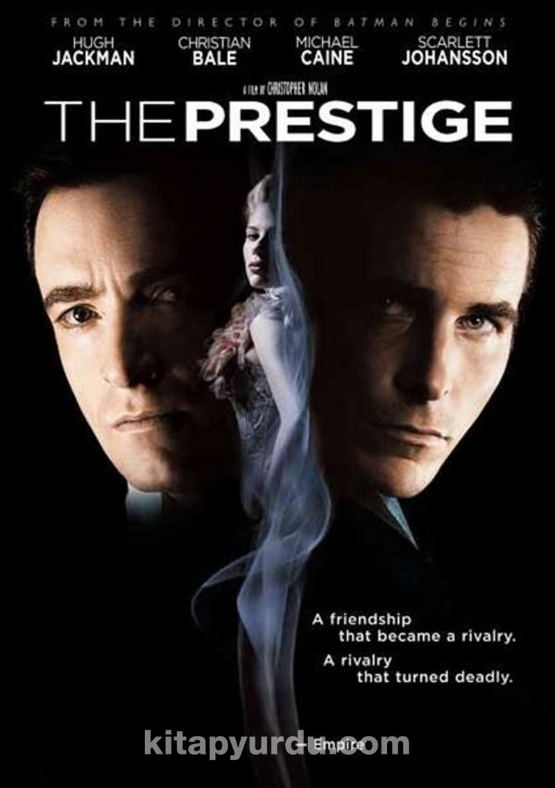

Başlangıç
Dom Cobb (Leonardo DiCaprio) çok yetenekli bir hırsızdır. Uzmanlık alanı, zihnin en savunmasız olduğu rüya görme anında, bilinçaltının derinliklerindeki değerli sırları çekip çıkarmak ve onları çalmaktır. Cobb’un bu ender mahareti, onu kurumsal casusluğun tehlikeli yeni dünyasında aranan bir oyuncu yapmıştır. Ancak, aynı zamanda bu durum onu uluslararası bir kaçak yapmış ve sevdiği herşeye malolmuştur. Cobb’a içinde bulunduğu durumdan kurtulmasını sağlayacak bir fırsat sunulur. Ona hayatını geri verebilecek son bir iş; tabi eğer imkansız başlangıçı tamamlayabilirse... Mükemmel soygun yerine, Cobb ve takımındaki profesyoneller bu sefer tam tersini yapmak zorundadır; görevleri bir fikri çalmak değil onu yerleştirmektir. Eğer başarırlarsa, mükemmel suç bu olacaktır. Ama ne dikkatle yapılan planlamalar, ne de uzmanlıkları, onları, her hareketlerini önceden tahmin ettiği anlaşılan tehlikeli düşmanlarına karşı hazırlıklı kılabilir. Bu, gelişini sadece Cobb’un görebildiği bir düşmandır.
Yönetmen: Christopher Nolan
Yapımcı: Christopher Nolan ,Emma Thomas
Senarist:Christopher Nolan
Oyuncular: Leonardo DiCaprio
Marion Cotillard
Joseph Gordon-Levitt
Ellen Page
Cillian Murphy
Ken Watanabe
Tom Hardy
Michael Caine
Müzik:Hans Zimmer
Görüntü yönetmeni:Wally Pfister
Kurgu:Lee Smith
Dağıtıcı:Warner Bros.
Çıkış tarih(ler)i:8 Temmuz 2010 (Birleşik Krallık)
Süre:148 dakika
Bu filmi beğendiyseniz; |
||
|  |  |
|
IMBDb puanı:8.8